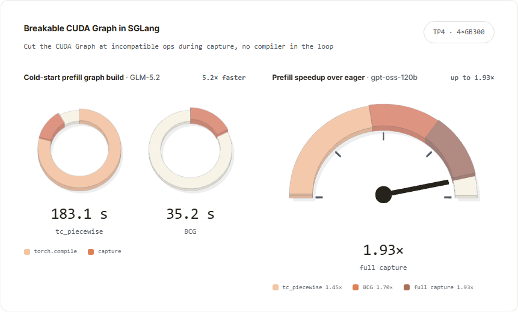
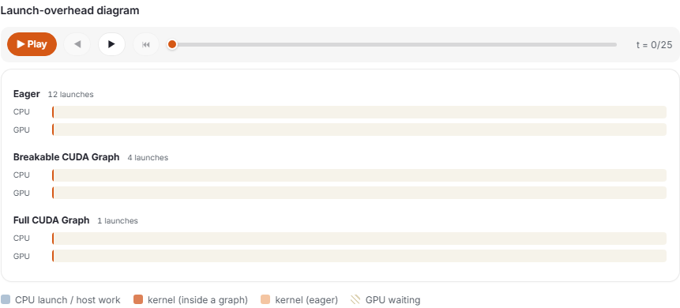
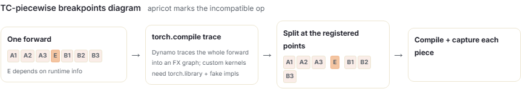
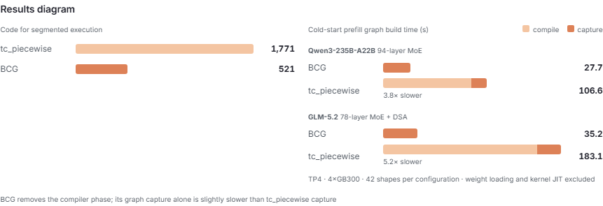
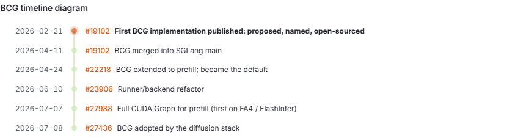
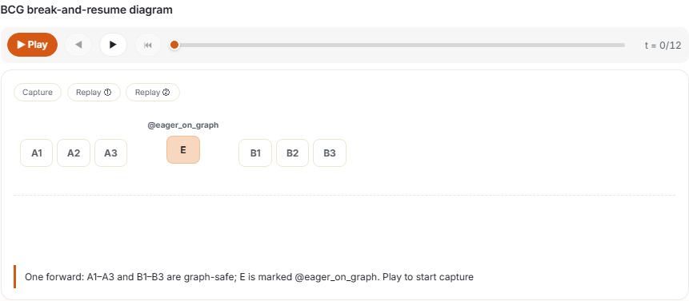
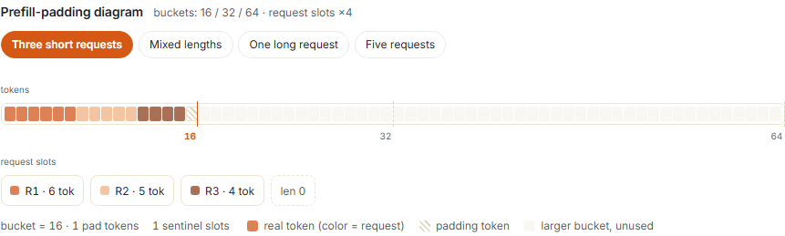
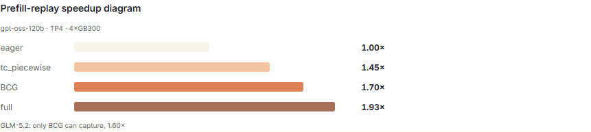
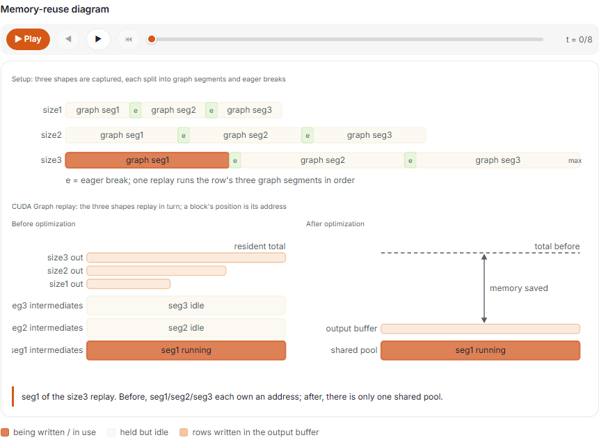
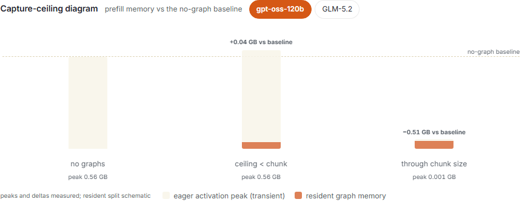

SGLang 现在提供了两种 CUDA Graph 技术，可以达到传统 CUDA Graph 无法达到的目标：预填充图的构建速度提高 3.8–5.2 倍，预填充本身的运行速度比 eager 快 1.93 倍，整个过程只需要四分之一的代码。 Breakable CUDA Graph 在 SGLang 中被提出、命名并首次开源，并且已经成为 SGLang 预填充路径上的默认值。
单独打开本地交互页面（可用“上一张 / 下一张”浏览全部本地静态备用图）
查看静态备用图
背景
首先，介绍 CUDA Graph 背后的基本思想：推理步骤不是单个内核，而是许多 GPU 操作的序列。 CUDA Graph 记录一次 GPU 工作负载，然后一次重播所有内核，这减少了逐个启动小内核的 CPU 开销。
然而，在维护 SGLang 的同时，我们发现充分使用 CUDA Graph 需要的不仅仅是把每个操作记录一次。许多操作与图形不兼容。这些操作出现在前向过程的中间，单个不兼容的操作就足以使其大部分脱离 CUDA Graph。
那么，自然的想法是在那些不兼容的操作之前切断 CUDA Graph，然后再恢复。下图比较了执行同一个前向过程的三种方法：

BCG 的直觉很简单；工程则不然。我们的第一个答案是通过 torch.compile（在本文的其余部分中称为 tc_piecewise）：让编译器跟踪完整的前向，然后在指定断点切分计算图。它完成了工作，但编译时间随着模型复杂性的增加而增加，并且很难自然适配我们自行优化的定制内核。这是该路线的完整内容：
| 后端 | 分段方式 | 边界设置方式 |
|---|---|---|
| Full | 每个形状一个完整图，没有 eager 区域 | 不需要边界 |
| Breakable（BCG） | 捕获期间直接分段，图段由 eager 区域隔开 | 使用 @eager_on_graph 标记，捕获时插入 |
| tc_piecewise | torch.compile 跟踪完整前向，FX 图在注册点处分割 |
跨边界输入输出必须能由编译器表示 |

既然 capture 已经按顺序执行运算符，为什么一定要由编译器寻找断点？遵循这个想法，我们构建了 Breakable CUDA Graph：在捕获过程中直接插入 eager 断点，无需编译器理解整个前向过程。它在大约四分之一的代码中达到了相同的分段执行（521 行与 1,771 行）；由于不涉及编译，它构建预填充图的速度提高了 3.8–5.2 倍；仅在预填充上进行测量，其运行速度比 eager 快 1.70 倍。 BCG 最先用于解码路径 (#19102)，后来扩展到预填充 (#22218)，现在它是默认路径。


本文的其余部分将介绍 SGLang 如何实现 BCG 和完整的 CUDA Graph 进行预填充。
Breakable CUDA Graph（可中断 CUDA 图）
设计和机制
BCG 允许开发人员直接使用 @eager_on_graph 标记不兼容区域。在捕获期间，当执行到达标记的函数时，当前图段将关闭，该函数会以 eager 模式运行，然后在新的段中恢复捕获。前向过程由一系列 CUDA Graph 片段组成，片段之间是 eager 区域。
在捕获期间，标记函数在两个段之间运行一次，并且它返回的张量被保留为持久边界缓冲区，其设备地址保持固定；然后根据该地址捕获以下段。重播时，eager 函数正常运行并返回一个新的张量，BCG 将其复制到保留的缓冲区中。下图演示了一次捕获和两次重放：

好处
构建速度更快。传统的编译器分段方案中，准备时间主要耗在编译，而不是捕获：torch.compile 占准备预填充图所用时间的 78-86%，并且随着模型复杂性的增加而增加。 BCG 完全消除了这部分占比达 78%–86% 的编译开销：预填充图的构建速度提高了 3.8-5.2 倍（每个配置 42 个捕获的形状，TP4，4×GB300）。
更广泛的兼容性。 SGLang 严重依赖自定义 CUDA、Triton 和 JIT 编译的内核，它们不是本机 PyTorch 运算符。让它们对 torch.compile 可见通常意味着通过 torch.library 包装它们并提供一个用于跟踪的假实现。更重要的是，中断的位置也受到限制：跨越边界的输入和输出必须是编译器可以表示的类型，并且当自然断点涉及特殊的运行时状态或返回类型时，开发者往往只能移动断点或扩大 eager 区域，只是为了向编译器提供它可以理解的接口。保持 CUDA Graph 的正常运行越来越感觉就像维护 torch.compile 集成。 BCG 通过直接插入 eager 断点消除了这一限制，并且无需维护单独的编译器。同样的分段执行在 BCG 中需要 521 行，而在旧方法中需要 1,771 行。
更容易调试。一旦捕获，CUDA Graph 在重放时就是一个黑匣子：普通的 Python 不会在其中执行，这使得打印、断言和逐步检查变得困难。 BCG 自然地保留了普通 Python 在每次重放时仍然运行的 eager 区域。SGLang 用 --debug-cuda-graph 扩展了这个想法，它把整个解码过程包在一个 eager 断点中，使模型以 eager 模式执行。这提供了一个有用的调试边界：如果问题仍然存在，它很可能存在于模型中或图形之外；如果它消失了，捕获本身就是第一嫌疑人。
SGLang 的扩散堆栈 (#27436) 也采用了 BCG：在单个 B200 上，512×512 的 Qwen-Image 端到端时间从 6.48 秒下降到 2.45 秒，Z-Image 从 1.231 秒下降到 0.662 秒。
进一步：用于预填充的完整 CUDA Graph
如前所述，BCG 通过切分 CUDA Graph 获得兼容性：不兼容操作留在图外执行，代价是每个断点都会增加少量运行时开销。相比之下，完整的 CUDA Graph 将整个转发捕获为一张图，没有 eager 区域，重放时的启动次数最少。本节将相同的捕获推到预填充上。
使预填充静态
继承的技术挑战。与大小固定的解码 AR 步骤不同，预填充很难捕获，因为有两件事不同：预填充 token 数量，以及这些 token 所属的请求数量。 CUDA Graph 要求两个维度保持固定。最重要的是，一些注意力后端依赖于运行时元数据。因此，Full CUDA Graph 长期以来难以应用于预填充阶段，这也是预填充路径采用 BCG 的主要原因之一。最近，#27988 重新设计了请求槽和注意力元数据的表示方式，因此支持的注意力后端不再需要在图之外运行。
解决方案。 SGLang 做了两件事。
- 它用 token 桶固定 token 维度：把实时批次填充到最近的已捕获 token 数量。
- 它单独处理请求维度：每个图保留固定数量的请求槽，实时请求取第一个，其余的被重写为零长度哨兵。
承载的请求多于保留槽位的批次会回退到 eager。 Sentinel 和注意力元数据都必须在每次重播时在图外重建，因此完整的预填充捕获目前仅适用于 FlashAttention (fa4) 和 FlashInfer，这两个后端以这种方式准备扩展模式元数据。完整的预填充捕获仍处于实验阶段，必须明确启用；引擎警告 full 是实验性的，并针对生产工作负载指向 BCG 或 tc_piecewise。扩大后端支持以及调整存储桶和插槽选择仍然是我们的任务。
如下图所示，该图涵盖了我们在不同场景下如何填充 token 和请求维度：

预填充基准
我们单独测量了预填充：固定输入长度、单个输出 token，一次一个请求，在 gpt-oss-120b（TP4，4×GB300）上的每种实验配置中禁用解码图，所有四条路径都按相同条件运行。完全捕获比 eager 快 1.93 倍，BCG 快 1.70 倍，tc_piecewise 快 1.45 倍，因此 BCG 在重放时也比基于编译器的后端快 17%，而不仅仅是在构建时。差距来自于每次前向执行的内容：BCG 直接重放其记录的片段，而 tc_piecewise 每次都会回调编译后的可调用对象，在其捕获片段运行之前承担 Torch Dynamo 的守卫检查和调度开销。在 GLM-5.2 上，只有 BCG 可以完全捕获——tc_piecewise 无法追踪前向；完整捕获只覆盖不含稀疏注意力的路径——其速度达到 eager 模式的 1.60 倍。每条曲线在提示长度的 32× 范围内都是平坦的，这说明瓶颈来自启动开销，而不是计算量：

CUDA 图的内存占用
上述两件事都会影响内存：BCG 将图形捕获切成段，而完整捕获会带来更大的预填充形状。CUDA Graph 内存是常驻的：重播需要中间张量来保留其地址，因此在捕获时分配的任何内容都会保留，直到进程退出。这就留下了两个问题。
- 当 BCG 将转发切割成段时，常驻内存不得随段数而增长。
- 对于常驻图内存来代替最坏情况的激活峰值，捕获必须覆盖最大的预填充形状。
在分段捕获中重用
想象一下 BCG 分成 N 段的预填充转发。如果每个段的中间体占用并保留自己的内存，则图形内存可以轻松成倍增加（N 段×捕获形状的数量）。修复方法很简单：CUDA Graph 按顺序重播，一次仅运行一个段，因此无需同时保持每个段的中间体处于活动状态。后面的段可以覆盖前面的段留下的内容并共享相同的内存。 BCG 通过三种形式的重用来避免这种增长。
- 段共享一个内存池。捕获形状的每个片段都使用相同的 CUDA Graph 池，因此中间存储可以重复使用，而不是由每个片段单独固定。
- eager 断点处使用弱引用。当传递到中断的张量的存储已归图池所有时，张量通过弱引用保存，避免不必要的 Python 引用延长其生命周期。弱引用技术来自 vLLM PR #9724，该 PR 引入了这一方法，以便捕获的图形可以共享输出缓冲区，而不是每个图形都固定自己的一个。
- 捕获大小共享一个输出缓冲区。所有捕获大小共享一个最大大小的输出缓冲区，每个形状仅切片其需要的行，而不是为每个形状分配一个输出缓冲区。
有了这些重用机制，即使是大型捕获表也保持适度：78 层 MoE 中的 42 个形状在 GLM-5.2 上增加了 2.4 GB 的图形内存。

通过分块预填充大小捕获
捕获某个形状会用常驻内存换取瞬时峰值的消除，并且这种交换仅对实际重放的形状有效。如果捕获在某个大小 n 处停止，则大于 n 的预填充仍会回退至 eager，且峰值完好无损，而较小形状的驻留内存已被耗尽，并且总内存最终高于无图基线。重要的始终是捕获上限，而不是捕获的形状数量。
chunked_prefill_size 是单个预填充前向的上限，因此一直捕获到它可以让最大的预填充重放图形并消除最坏情况的激活峰值。在 gpt-oss-120b 上，峰值从 0.56 GB 下降到 0.001 GB，在 GLM-5.2 上从 1.55 GB 下降到 0.35 GB，使总内存占用比无图基线低 0.51 GB 和 1.10 GB。如图所示，相对于几百 GB 的总占用量来说，这个量很小，但这意味着 CUDA Graph 正在节省内存，而不是浪费内存。另一个好处是可预测的内存：过去随工作负载移动的峰值变成了捕获时建立的固定分配，引擎可以预先考虑该分配，而不是为大型预填充保留空间：

致谢
这项工作是 SGLang 团队和 Meta 团队之间的合作。 SGLang：Yuwei An*、Cheng Wan、Xiaoyu Zhang、Mick Qi、Baizhou Zhang、Yusheng Su、Ke Bao；Meta：陈世阳*、郑连民（*同等贡献）。我们还感谢 NVIDIA、AMD、Thinking Machines Lab 和 Meta PyTorch 团队一路以来的帮助。
进一步阅读
- LMSYS 博客：SGLang 中的高级 CUDA Graph 技术
- sglang#19102：第一个 BCG 实现
- sglang#22218：用于预填充的 BCG
- sglang#23906：运行程序/后端重构
- sglang#27988：用于预填充的完整 CUDA Graph
- NVIDIA：CUDA Graph入门
可视化教程由 Yichi Zhang 和 SGLang 团队编写。
原文交互图实验室
这里保留了原文的原生交互控件，可使用上方菜单切换图表，并操作播放、时间轴、场景按钮或曲线开关。